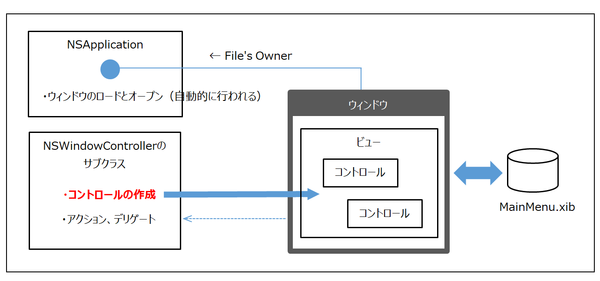

ウィンドウ制御の仕組み
ウィンドウコントローラーは、ウィンドウとウィンドウが保持するオブジェクトの振る舞いを制御する。ウィンドウコントローラの機能は、NSwindowConreollerのサブクラスに実装されるだけでなく、それ以外のクラスにも実装される。AppDelegateクラスがウィンドウコントローラーとして機能することが多いのは典型的な例である。この章では両者ついて説明する。
AppDeelegateクラスをウィンドウコントローラとする
Xcodeでウィンドウアプリケーション（Cocpa App）を作成すると、自動的にAppDeelegateクラスが作成され、空白のウィンドウオブジェクトがxibファイルに生成される。デフォルトの仕組みでは、アプリケーション起動後にウィンドウオブジェクトが xibファイルから自動的に読み込まれてウィンドウが開く。
以下の簡単な例で実装方法を説明する。 アプリケーションはボタンがクリックされたときに「ボタンがクリックされた」の文字列をテキストフィールドに入力し、ボタンの機能を無効にする。

インタフェースビルダ
ウィンドウ上にテキストフィールドとボタンのオブジェクトを配置する。これらはNSControlのサブクラスであるため、以下で説明する機能を実装することができる。
AppDelegateクラスから、テキストフィールドとボタンに対しアウトレット接続をする。これにより、AppDelegateクラスのコードからこれらのオブジェクトのプロパティに対し参照や操作が可能となる。
ボタンからAppDelegateクラスのメソッドに対しアクション接続をする。 これでボタンのクリックにより、このメソッドを呼び出すことができる。
Xcode
テキストフィールドへのアウトレット接続を通して初期値の文字列をセットする。ボタンがクリックされたらテキストフィールドの値を更新し、ボタンの機能を無効化する処理をアクションメソッドに実装する。
NSWindowControllerクラスをウィンドウコントローラとする
次の例はメインウィンドウからサブウィンドウを開く処理である。このような場合、NSWindowControllerクラスのサブクラスを作成し、サブウィンドウの制御を担当させるのが一般的である。
ウィンドウコントローラはサブウィンドウが保持するコントロール（テキストフィールド、ボタンなど）を制御する処理を実装し、それらをxibファイル内のウィンドウオブジェクトと関連付ける。
インタフェースビルダ
Xcodeで空白のウィンドウを持ったユーザーインターフェイス（xibファイル）を新規作成する。 インタフェースビルダーを使用し、ウィンドウにテキストフィールドとボタンのオブジェクトを追加する。
xibファイルのFile's OwnerのクラスをNSWindowControllerクラスのサブクラスにする。これによりウィンドウ、テキストフィールド、ボタンなどをウィンドウコントローラーの所定のプロパティやメソッドに接続できる。アウトレット接続とアクション接続の方法は、AppDelegateの実装と同じ。
Xcode
AppDelegateクラスの実装
アプリケーション起動時、サブウィンドウのコントローラーオブジェクトを作成し、xibファイルからウィンドウをロードする。ウィンドウは、アプリケーションの実行中はメモリに常駐する。ボタンをクリックするとサブウィンドウが表示される。
ウィンドウ コントローラ クラスの実装
プログラムの実装はAppDelegateと同じ。
サブウィンドウを開く詳しい方法は、「メインウィンドウからサブウィンドウを開く」を参照。
プログラムでウィンドウをデザインする
インターフェイスビルダーの代わりにプログラムでコントロール（テキストフィールド、ボタンなど）を作成する方法

インタフェースビルダ
空白のウィンドウを持ったユーザーインターフェイス（xibファイル）を作成する。
Xcode
ウィンドウコントローラは、ウィンドウロード時にテキストフィールドとボタンのオブジェクトを作成し、コンテントビューに貼り付ける。また、それらのオブジェクトをプロパティとして保持する。オブジェクトへの参照を通してテキストフィールドに文字列を設定する。ボタンの独自のアクションを定義し、クリックされたとき呼び出されるメソッドの実装を行う。